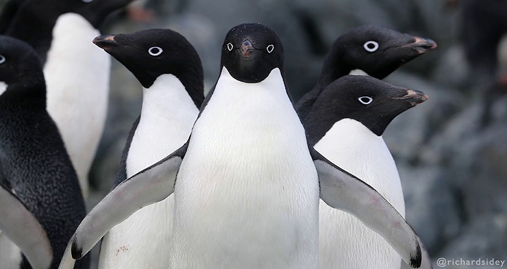
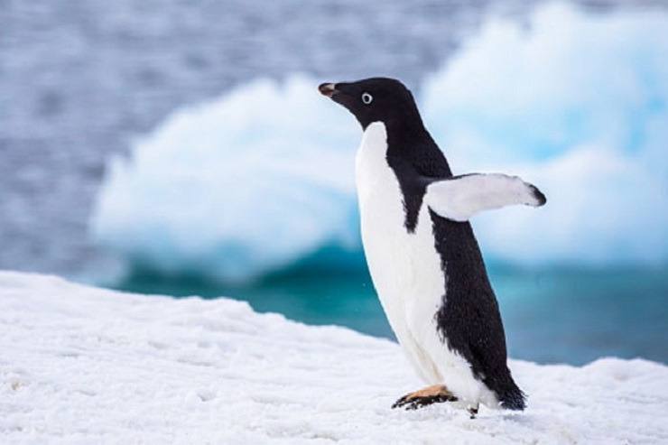

동물 보호 단체 황제펭귄 킹펭귄 아델리펭귄 훔볼트펭귄 마카로니펭귄 바위뛰기펭귄 쇠푸른펭귄 노란눈펭귄 아델리펭귄 서식지가 가장 넓은 펭귄이며, 황제펭귄과 더불어서 지구상에서 제일 남단에서 서식하는 펭귄입니다. 키:약 70cm 몸무게: 최대 6kg 분포: 남극대륙 및 연안 섬 머리와 등 부위의 검은색 깃털과 배 부분의 흰 깃털이 극명한 대비를 이루며, 가장 눈에 띄는 특징은 양쪽 눈의 가장자리를 따라 난 희끗한 고리 무늬입니다. 먹이 사냥을 하는 육식성 조류이며, 먹이 가운데 가장 많은 비중을 차지하는 것은 그 비율이 90%에 달하는 크릴입니다. 그 밖에도 이따금 극지 어류와 두족류를 먹기도 한다. 번식기는 여름에 찾아오며, 황제펭귄처럼 남극의 여름 기후에도 녹지 않는 두꺼운 빙하 지대를 찾아 100km가 넘는 대이동을 하는 습성이 있습니다. 그러나 모든 아델리펭귄들이 이 습성을 따르는 것은 아니며, 종종 가까운 연안에 조약돌로 간소한 둥지 겸 거처를 마련하기도 합니다. 암컷은 한 배에 두 개씩 알을 낳고 새끼가 껍데기를 깨고 나올 때까지 수컷과 교대로 알을 품습니다.  
서식지가 가장 넓은 펭귄이며, 황제펭귄과 더불어서 지구상에서 제일 남단에서 서식하는 펭귄입니다.
키:약 70cm 몸무게: 최대 6kg 분포: 남극대륙 및 연안 섬
머리와 등 부위의 검은색 깃털과 배 부분의 흰 깃털이 극명한 대비를 이루며, 가장 눈에 띄는 특징은 양쪽 눈의 가장자리를 따라 난 희끗한 고리 무늬입니다. 먹이 사냥을 하는 육식성 조류이며, 먹이 가운데 가장 많은 비중을 차지하는 것은 그 비율이 90%에 달하는 크릴입니다. 그 밖에도 이따금 극지 어류와 두족류를 먹기도 한다. 번식기는 여름에 찾아오며, 황제펭귄처럼 남극의 여름 기후에도 녹지 않는 두꺼운 빙하 지대를 찾아 100km가 넘는 대이동을 하는 습성이 있습니다. 그러나 모든 아델리펭귄들이 이 습성을 따르는 것은 아니며, 종종 가까운 연안에 조약돌로 간소한 둥지 겸 거처를 마련하기도 합니다. 암컷은 한 배에 두 개씩 알을 낳고 새끼가 껍데기를 깨고 나올 때까지 수컷과 교대로 알을 품습니다.